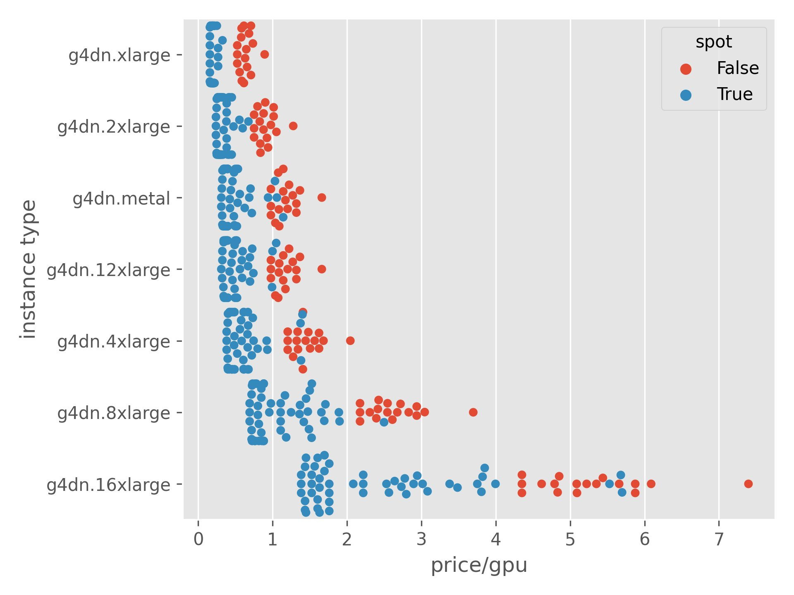
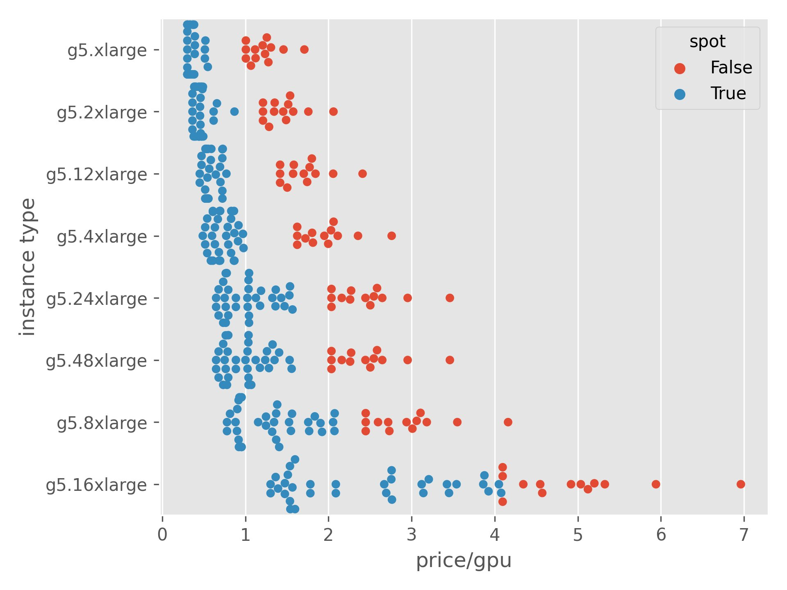

10 Cloud Services
TOC
- Misc
- Price Management
- Saturn Cloud
- Google Cloud Platform (GCP)
- Microsoft Azure
- AWS
- Comparisons
10.1 Misc
- RStudio Server on your docker image allows you to access an ide connected to the server through a browser. Useful so you can make sure the correct packages are installed.
- Serverless computing is a method of providing backend services on an as-used basis.
- A serverless provider allows users to write and deploy code without the hassle of worrying about the underlying infrastructure
- Charged based on their computation and do not have to reserve and pay for a fixed amount of bandwidth or number of servers, as the service is auto-scaling
- e.g. AWS Lambda (i.e. resources only get spun-up when an event is triggered)
- NVIDIA GPU Guide (thread)
- RTX 20-series or 30-series GPUs are forbidden from inclusion in data centers
- General Recommendations (Oct 2022)
- A100 for model training
- T4 for inference workloads
- K80
- Released in 2015, the K80 contained a lot of VRAM for the time (24 GB)
- Came before tensor cores and is relatively weak by today’s standards
- Only okay for learning purposes
- P4
- Released in 2016
- Value came from its low power consumption
- May find it priced higher than its upgraded version (the T4), so recommended to avoid it
- T4
- Released in 2018
- Significant upgrade for inference workloads compared to the P4
- Extremely low power consumption, tensor cores, and plenty (16GB) of VRAM
- Cheap, so if you have an inference workload, recommended to strongly consider a T4
- P100
- Big improvement for model training workloads over the K80 when released
- Less RAM (16GB) than K80
- Way more compute than K80
- Can see memory savings from using mixed-precision training
- No tensor cores
- V100
- Huge upgrade over the P100
- Same VRAM as P100 many but more CUDA cores
- Introduces Tensor Cores
- More cost-efficient than the P100
- A100
- newest data center GPU
- upgraded tensor cores
- most benchmarks show 3x+ faster training compared to the V100
- 80GB VRAM
- Price tag might be big, but it’s usually worth it over the V100
10.2 Price Management
- spot instances for cheaper machines
- autoscaling (kubernetes?) to handle peak usage times (spin-up more machines) while saving during slow times (spin down excess machines)
- Use opensource project management tools (dvc, airflow, etc)
- Google
- The Google Kubernetes Engine (GKE) control plane is free, whereas Amazon’s (EKS) costs $0.20 an hour.
- AWS
- With a well-defined framework of tag keys and values applied across different AWS resources, billing breakdowns by tag prove extremely useful for greater insight on the source of AWS charges — especially if resources are tagged by department, or team, or different layers of organizational granularity.
- Reserved Instances - commit to specific configurations for one or three years at reduced cost
- Spot Instances - pay significantly lower costs but potential for applications to be interrupted
- Savings Plans
- EC2 Instance Savings Plans to reduce compute charges for specific instance types and AWS regions
- Savings of up to 72%
- Compute Savings Plans to reduce compute costs irrespective of type and region.
- Savings up to 66% and extends to ECS Fargate and Lambda functions.
- EC2 Instance Savings Plans to reduce compute charges for specific instance types and AWS regions
- Image Management
- Data Lifecycle Manager - automates the creation, retention, and deletion of images
- Will not manage images and snapshots created by other means, and it also excludes instance store-backed images.
- EC2 Recycle Bin - serves as a safety net to avoid the accidental deletion of resources — retaining images and snapshots for a configurable time where we may restore them before they are deleted permanently.
- Data Lifecycle Manager - automates the creation, retention, and deletion of images
- Lambda
- Cloudwatch - Lambda automatically creates log groups for its functions, unless a group already exists matching the name
/aws/lambda/[{functionName}]{style='color: #990000'}. These default groups do not configure a log retention period, leaving logs to accumulate indefinitely and increasing CloudWatch costs.- Explicitly configure groups with matching names and a retention policy to maintain a manageable volume of logs.
- Memory Optimization - AWS Lambda Power Tuning can help to identify optimizations, albeit with notable initial costs given the underlying use of AWS Step Functions.
- Lambda charges based on compute time in GB-seconds, where the duration in seconds is measured from when function code executes until it either returns or otherwise terminates, rounded up to the nearest millisecond. To reduce these times, we desire optimal memory configuration.
- Cloudwatch - Lambda automatically creates log groups for its functions, unless a group already exists matching the name
- S3 Lifecycle Configuration
- Charged for how much data stored, but also which S3 storage classes are utilized.
- Standard (default) class is the most expensive, permitting regular access to objects with high availability and short access times.
- Infrequent Access (IA) classes offer reduced cost for data which requires limited access (usually once per month)
- Archival options via Glacier deliver further cost reductions.
- Configuring the lifecycle allows you to automatically transfer data to different storage classes and thereafter permanently delete it, X and Y days respectively after data creation
- Charged for how much data stored, but also which S3 storage classes are utilized.
10.3 Kaggle
- Free
- 4-core CPU instances w/30 GB RAM
- 2-core CPU, 2xT4 GPU w/13GB RAM
- T means tensor cores
- 1 hour spent using 2xT4’s takes the same amount of your quota as a P100 (old free gpu offering)
- Means 30-40 hours of free, multi-GPU compute per week
10.4 Saturn Cloud
- Saturn Cloud Recipes
- JSON files that specify your environment
- Good for keeping track of server dependencies (e.g. linux libraries)
- Dunno about R packages
10.5 Google Cloud Platform (GCP)
- BigQuery sandbox is Google’s GCP free tier cloud SQL database. It’s free but your data only lasts 60 days at a time.
- GCP allows users to run deep learning workloads on TPUs
- Since data expires after 60 days, back-up the model coefficients and performance score tables to Google Sheets. Article suggested this is possible through WebUI.
- As of Nov.19, regression, logistic regression, and k-nn are the only models available to be run with the sql query editor
- https://cloud.google.com/free/
- $300 credit for 12 months
- Always free:
- 2M requests for containers
- 1 GB storage
- Scalable NoSQL document database.
- 50,000 reads, 20,000 writes, 20,000 deletes per day
- Functions
- 1 f1-micro instance per month (Available only in region: us-west1, Iowa: us-central1, South Carolina: us-east1)
- 30 GB-months HDD
- 5 GB-months snapshot in select regions
- 1 GB network egress from North America to all region destinations per month (excluding China and Australia)
- Kubernetes
- One-click container orchestration via Kubernetes clusters, managed by Google.
- No cluster management fee for clusters of all sizes
- Each user node is charged at standard Compute Engine pricing
- App Engine
- 28 instance hours per day
- 5 GB Cloud Storage
- Shared memcache
- 1,000 search operations per day, 10 MB search indexing
- 100 emails per day
- BigQuery
- Fully managed, petabyte scale, analytics data warehouse.
- 1 TB of querying per month
- 10 GB of storage
- Other Stuff
- Your free trial credit applies to all GCP resources, with the following exceptions:
- * You can’t have more than 8 cores (or virtual CPUs) running at the same time.
- * You can’t add GPUs to your VM instances.
- * You can’t request a quota increase. For an overview of Compute Engine quotas, see Resource quotas.
- * You can’t create VM instances that are based on Windows Server images.
- You must upgrade to a paid account to use GCP after the free trial ends. To take advantage of the features of a paid account (using GPUs, for example), you can upgrade before the trial ends. When you upgrade, the following conditions apply:
- * Any remaining, unexpired free trial credit remains in your account.
- * Your credit card on file is charged for resources you use in excess of what’s covered by any remaining credit.
- You can upgrade your account at any time after starting the free trial. The following conditions apply depending on when you upgrade:
- * If you upgrade before the trial is over, your remaining credit is added to your paid account. You can continue to use the resources you created during the free trial without interruption.
- * If you upgrade within 30 days of the end of the trial, you can restore the resources you created during the trial.
- * If you upgrade more than 30 days after the end of the trial, your free trial resources are lost.
- Spot Instances (Preemptible VM)
- usage capped at 24 hrs
- pricing is fixed and not market-driven
- Google price calculator: https://cloud.google.com/products/calculator/#id=3115f19f-4ff0-4c57-9028-69cb994fe7ca
- Example
- creating a cluster with:
- 1 x Dataproc cluster node with 30 GB of RAM
- 3 x Dataproc worker nodes with 15 GB of RAM
- Using less than 5 GB of disk space in a bucket
- And running the cluster for only 4 hrs
- Would cost only around $5 at the end of the month
- creating a cluster with:
- Free Tier
- includes a 12-month free trial with $300 credit to use with any GCP services and an Always Free benefit, which provides limited access to many common GCP resources
- Use to test out, but KEEP EVERYTHING SMALL (data, hardware, etc). Need to upgrade it to see the true benefit. Free tier resources look like my desktop computer. Whatever cash is leftover should transfer to account.
- https://cloud.google.com/free/docs/gcp-free-tier#how-to-upgrade
- upgrade it from the free trial to a paid account through the GCP Console clicking the Upgrade button at the top of the page
Steps for new project
- Go to interface https://console.cloud.google.com/
- create a project. “select a project” on top bar –> “new project” on top right –> choose name (optionally a folder/organization if you have one) –> create
- (article wasn’t very reliable and went on talk about a python implementation so I stopped here
Tips
- App Engine
- Don’t use App Engine Standard environments — big brother G wants you to use rather Flex environments, otherwise, they’ll punish you.
- Review cost analysis regularly to make sure there are no surprising costs.
- Make sure you clean up redundant App Engine application versions to prevent G from robbing you.
10.6 Microsoft Azure
- https://azure.microsoft.com/en-us/free/?WT.mc_id=Revolutions-blog-davidsmi
- https://visualstudio.microsoft.com/dev-essentials/
- starts azure trial but gives you free sql server developer edition
- Won’t be charged until you choose to upgrade.
- 12 months access to $ services for free
- $200 credit for any service for 30 days
- At the end of the 30 days, I think the remainder goes into your account after you change to a pay-to-play account
- Access to the services that are always free
- Azure Kubernetes Service (AKS)
- Functions
- 1,000,000 requests per month
- a solution for easily running small pieces of code in the cloud. You can write just the code you need for the problem at hand, without worrying about a whole application or the infrastructure to run it.
- Example use case: for handling WebAPI requests and sending the different data and results to where it needs to go.
- App Service
- 10 web, mobile, or API apps
- Active Directory B2C (identity)
- 50,000 authentications per month
- Machine Learning Server
- Develop and run R and Python models on your platform of choice.
- SQL Server 2017 Developer Edition
- Build, test, and demostrate applications in a non-production environment.
- Other stuff
- Blob storage
- object storage solution for the cloud
- optimized for storing massive amounts of unstructured data
- Spot Instances (Low Priority VM)
- not time limit on instance usage
- no warning on termination by Azure
- Tips
- If you can’t create a service, because Azure servers are under maintenance for more than a couple of minutes — check out your permissions and registrations under the “Resource providers” panel.
- If you see any strange errors on the Azure Portal — just change the filters’ values.
- If you use Azure Machine Learning, and your scoring function cannot locate your source code — deliver the code as a Model and add it explicitly to the sys.path in the init function.
- If you use Azure Machine Learning, don’t use Batch Endpoints — it looks like they are not ready yet — just use the regular Published Pipelines. In fact, “Batch endpoint” is just a wrapper around a published pipeline.
- Don’t include flask in your Azure conda environment specification.
10.7 AWS
Instance types
- c-type instances are compute heavy
- r-type instances are RAM heavy
- m-type instances are balanced
- “Each thread is represented as a virtual CPU (vCPU) on the instance. An instance has a default number of CPU cores, which varies according to instance type. For example, an m5.xlarge instance type has two CPU cores and two threads per core by default—four vCPUs in total.”
- spot prices from 03/24/2020, all calculations over the previous month
- gen purpose
- m6g.8xlarge
- gen purpose, 32 vcpu, 128 gb
- newer graviton, didn’t see any specs, but supposed to be much better than the xenon 1st gen
- m5.8xlarge
- gen purpose, 32 vcpu, 128 gb
- older 3.1 ghz, xenon
- on-demand $1.54/hr
- m5a.8xlarge
- gen purpose 32 vcpu, 128 gb
- 2.4 ghz, slower processor speed than m5
m5n.8xlarge- gen purpose 32 vcpu, 128 gb
- 3.1 ghz, xenon specialized for neural networks, ML tasks
- n.virg, 71% savings, <5% interruption
- ohio, 83% savings, <5% interruption
- on-demand $1.90/hr
- potential spot price = $0.32
- m5dn.8xlarge
- same but with 2 ssd hard drives
- m4.10xlarge
- gen purpose 40 vcpu, 160 gb
- 2.4 ghz
- smaller write-up, get the sense these are older processors/instances
- m6g.8xlarge
- compute optimized
- Requires HVM AMIs that include drivers for ENA (network adaptor) and NVMe (ssd hard drives)
- seems standard on a lot of instances (gen purpose and here), shouldn’ t be an issue
- c5.9xlarge
- 36 vcpu, 72 gb
- 3.4 ghz
- on-demand $1.53/hr
- c5d.9xlarge
- same but with ssd
- c5n.9xlarge
- 36 vcpu, 96 gb
- 3.0 ghz, built for task needing high throughput for networking
- on-demand, $1.94/hr
c4.8xlarge- 36 vcpu, 60 gb
- 2.9 ghz
- 67% savings, <5% interruption
- on-demand $1.59/hr
- potential spot price = $0.52
- Requires HVM AMIs that include drivers for ENA (network adaptor) and NVMe (ssd hard drives)
- memory optimized
r5.8xlarge- 32 vcpu, 256 gb
- 3.1 ghz
- n.virg, 72% savings, 5-10% interruption
- n.cal, 76% savings, <5% interruption
- on-demand $2.02/hr
- potential spot price = $0.48
- r5a.8xlarge
- 32 vpu, 256 gb
- 2.5 ghz
r5n.8xlarge- 32 vcpu, 256 gb
- 3.1 ghz, neural network optimized
- us.west. oregon 76% savings, 5-10% interruption
- on-demand $2.38/hr
- potential spot price = $0.57
- r4.8xlarge
- 32 vcpu, 244 gb
- 2.3 ghz
- z1d.6xlarge
- 24 vcpu, 192 gb
- 4.0 ghz
- on-demand $2.23
- accelerated computing
- inf1.6xlarge
- 24 vcpu, 48 gb
- built for ML
- on-demand $1.91/hr
- inf1.6xlarge
Free Tier (12 months after sign-up)
- aws.amazon.com – pricing (top) – free tier (mid) – create a free account (mid)
- EC2
- 750 hrs/mo of t2-micro instance usage
- for Linux, Windows, RHEL, SLES AMIs
- 750 hrs/mo of t2-micro instance usage
- Elastic Block Storage (EBS)
- 30 GB
- can be connected to an ec2
- Elastic Container Registry
- 500 MB per month
- for storing and retrieving Docker images
- example in course was a basic nginx image and it was 50MB
- 500 MB per month
- S3
- 5 GB of standard storage (high availability/ high durability)
- 20,000 Get Requests, 2000 Put Requests per month
- Elastic Load Balancing
- 750 hrs per month shared between classic and application load balancers
- no idea what the differences are between classic and application
- 750 hrs per month shared between classic and application load balancers
Pricing
- Price per GPU as of 29-06-2023

 - Examples
- r3.4xlarge 16 CPUs, 122 GB RAM, 1 x 320 SSD, Spot Price: $0.1517/h
- Trained H2O GBM, RF, XGBoost, DeepLearning. Cluster ran for 2 hr 40 min. Total Cost = around $0.42
- https://www.daeconomist.com/post/2019-01-15-partii/
- r3.4xlarge 16 CPUs, 122 GB RAM, 1 x 320 SSD, Spot Price: $0.1517/h
- Storage
- S3
- charged by amount stored
- $0.023/GB for standard (for first 50 TB)
- 0.004/GB for glacier and 0.00099/GB deep glacier
- takes longer to retrieve and not always available
- free inbound transfer
- free transfer between aws services (e.g. S3 to EC2) within the same region
- charged by amount stored
- Aurora
- storage + inbound/outbound: $0.20 per million requests
- S3
- Consolidated Biling
- a separate account. All company individual accounts (marketing, sales, etc.) bills are pooled into this account
- has no access to services
- has no permissions to access services in other accounts
- pooled bill counted towards potential discount billing
- Calculators
- Total Cost of Ownership (TCO) calculator
- compares cost of running a project on-premises to aws cloud
- aws pricing calculator
- calculates price of running a cloud application
- calculator.aws.com
- estimates cost per service, per service group, and total infrastructure
- helps find right ec2 instance and region
- Total Cost of Ownership (TCO) calculator
- Billing and Cost Management console
- cost explorer
- view and analysis costs and usage
- cost explorer
- Price per GPU as of 29-06-2023
Spot Instances
Summary
- Go to spot advisor and find instances that fit budget and compute requirements
- Prepare strategy for interruption
- Other services
As of Jan 01, 2019, cloudyr’s aws.ec2 PKG didn’t support all spot instances.
no time limit on instance usage
AWS gives a 2 min warning when it decides it needs your spot instance
pricing is market driven depending on capacity levels at the time
Available actions when Amazon “interrupts” your instance:
- Hibernation:
- “like closing your laptop display”
- saves data and memory and reboots once instance is available again
- Right before interruption, a daemon on the instance freezes the memory and stores it in Elastic Block Store (EBS) root volume
- Your EC2 will retain this root volume and any other EBS data volumes
- Once market price falls below bid price, instance resumes with memory restored from disk to RAM
- You aren’t charged while instance is in hibernation, but EBS volumes do cost $.
- Available for instance types: C3, C4, M4, R3, and R4 with < 100 GB RAM on Amazon’s Linux, Ubuntu, and Windows
- All this is done by something called the EC2 Hibernation Agent which sound like its just the name of the program on the servers
- Stop
- “like shutting down your computer to be turned on later”
- lose whatever is in RAM but retain EBS data volumes ($)
- restores once bid price < market price
- Terminate
- ***default option***
- everything deleted
- Hibernation:
Spot Advisor
- **always use this before spinning up spot instances **
- https://aws.amazon.com/ec2/spot/instance-advisor
- Input
- vCPUs
- Memory size
- Platform (linux?)
- availability zone (region?)
- amount required (number of instances?)
- output
- instance type
- vCPUs
- Memory (GB)
- Savings over On-Demand (%)
- Frequency of termination (%)
- liklihood your instance will get terminated
RunInstance API
- For requesting a spot instance through CLI I think
- Looks like you send something that looks like a python dict with max price, type, region, etc. to this API
Spot Blocks
- allows you to set a finite duration that your instance will run for
- 1 to 6 hrs
- no interruption during that time
- typically 30 to 45% cheaper than on-demand and maybe an additional 5% cheaper during non-peak hours for the region
- recommended for batch runs
- allows you to set a finite duration that your instance will run for
Strategy
- Use regions with largest pools of spot instances
- Largest pools
- us.east.1 (north.virginia)
- eu.west.1(ireland)
- These regions have most types/most instances available
- Typically can go uninterrupted for weeks
- less price fluctuation = more certainty
- Smallest pools
- eu.central.1 (frankfort)
- ap.south.1 (mumbai)
- ap.southeast.1 (singapore)
- typically get interrupted within days
- Largest pools
- Run groups of instances that come from multiple spot pools
- To used different compute types, jobs/tasks need to be in containers
- spot pools are instances with same region, type, OS, etc.
- applications running on instances from a least 5 different pools can cut interruptions by up to 80%
- Use regions with largest pools of spot instances
Managing/preparing for interruptions
- Only use for jobs that are short lived
- development and staging environments, short data processing, proof-of-concept, etc.
- Build internal management system that automatically handles interruptions
- look at spot pool historical prices for past 90 days
- looking for least volatile pools
- older generation (e.g. c-family, m-family) tend to be most stable
- look at spot pool historical prices for past 90 days
- Use 3rd party platform that manages spot instances and interruptions
- Spotinst - uses ML to choose and manage instances that optimizes price and provide continuous activity for apps that are without a single point of failure.
- Uses on-demand as a fall-back.
- SLA guarantees 99.9% availability.
- Snapshots volumes to migrate data to new instances in case of interruption.
- works with other services and platforms (kubernetes, codedeploy, etc.)
- Spot Fleet - aws service, automanages groups of spot instances according to either of the following strategies:
- strategy options
- lowest price - lowest price instances
- diversified - spread instances across pools
- After receiving 2 min warning,
- take snapshots of AMI and any attached EBS volumes and use them to launch a new instance.
- snapshot of AMI
- on EC2 dashboard – left panel – instances – instances
- right-click instance – image – create AMI
- image is in left -panel – Images – AMIs
- right-click instance – image – create AMI
- on EC2 dashboard – left panel – instances – instances
- Actually both snapshots might be able to taken in left panel – spot requests
- see AWS note – EC2 for further details
- snapshot of AMI
- take snapshots of AMI and any attached EBS volumes and use them to launch a new instance.
- strategy options
- Spotinst - uses ML to choose and manage instances that optimizes price and provide continuous activity for apps that are without a single point of failure.
- Only use for jobs that are short lived
need to drain and detach instance from elastic load balancer if one is used
If using auto-scaling, need to create an on-demand group and a spot instance group
- Kubernetes
- After receiving 2 minute interruption warning from AWS:
- Detach instance from elastic load balancer (ELB) is one is being used
- Mark instance as unschedulable (?)
- prevents new pods (group of containers on an instance that performs a job) from being scheduled on that node
- underlying compute capacity and scheduling of resources of the pods needs to be monitored. Compute capacity and pod resource requirements need to match.
- After receiving 2 minute interruption warning from AWS:
Comparison
- Misc
- Notes from
- No services for blockchain development, quantum computing, and graph databases in GCP (May 2022)
- https://cloud-gpus.com/ - tool for comparing gpu compute prices across vendors
- Data centers
- Closer the resources are to your business, the less latency
- (May 2022) GCP has caught up and surpassed AWS in the number of data centers and regions that are available
- Compute
- Cheapest vCPU
- GCP “e2-micro-preemptible” with 2 vCPU and 1 GB memory.
- 48% lower than “t4g.nano” from AWS
- 5 times lower than “A0” from Azure.
- AWS is in-between GCP and Azure in terms of price (i.e. Azure most expensive for cheap vCPUs)
- GCP “e2-micro-preemptible” with 2 vCPU and 1 GB memory.
- More performant GCP instances usually cost approximately the same as their analogs from other cloud providers
- Azure servers cost the same or slightly less than AWS
- GCP: dedicated PostgreSQL server
- Cheapest instances are 25% lower than the competitors
- GPU on-demand availability
- Conclusion: Assuming you need on-demand boxes to succeed right when you need them, the consensus seems to clearly point to AWS. If you can stand to wait or be redundant to spawn failures, maybe Google’s hardware acceleration customizability can win the day.
- Stats
- AWS consistently spawned a new GPU in under 15 seconds (average of 11.4s).
- GCP on the other hand took closer to 45 seconds (average of 42.6s).
- AWS encountered one valid launch error in these two weeks whereas GCP had 84
- Caveats
- GCP allows you to attach a GPU to an arbitrary VM as a hardware accelerator - you can separately configure quantity of the CPUs as needed.
- AWS only provisions defined VMs that have GPUs attached
- Cheapest vCPU
- Recommendations
- Azure
- You use the Microsoft Office stack (Word, Teams, OneDrive, SharePoint, etc.) and/or C# programming language.
- You head neither for the cheapest servers nor for the most expensive ones — you need something in the middle.
- You need a memory-optimized solution rather than a general-purpose or a compute-optimized one.
- You read about the current bugs and inconsistencies in Azure, and it does not scare you.
- AWS
- You are rich.
- You have AWS experts in your team.
- You build an enterprise-level long-term project.
- OR you just want to rent a cheap virtual machine, and you don’t care about all the other facilities.
- GCP
- You are a start-up company.
- You can’t invest much time in learning AWS and dealing with Azure bugs.
- You don’t need much flexibility and configuration facilities from the cloud.
- You are ready to accept the approaches dictated by the platform.
- You need either a general-purpose or a compute-optimized solution, but not a memory-optimized one.
- Azure